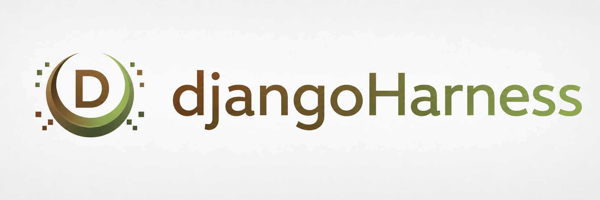

一套面向 AI 和 Agent 的底座框架，重塑开发体验。
受openai Harness 工程规范启发，本人的初心是想构建一个基于 Django框架 和 Harness 工程规范构建的现代框架。让大模型（如 Codex, Claude）在统一的规则下，直接产出高质量、可维护、符合工程标准的生产级代码。

这不是模型不够聪明，而是缺乏统一的标准与语境。
大模型每次生成的代码风格都不一样。今天用函数式编程，明天用面向对象，没有统一的规范。代码虽然能跑，但团队其他人接手时，像在看一本风格混乱的拼凑之作。
每次开启新会话，都要反复告诉 AI："我们用 Django 4.2，用 Celery 处理异步任务，要加类型提示……" 这些重复的前置沟通消耗了大量精力，稍微漏掉一点，生成的代码就无法直接集成。
面对简单的 CRUD，AI 应对自如。但一到复杂的业务逻辑、跨系统的调度，或者高并发的数据处理，缺乏底层架构规范的 AI 往往会给出脆弱的玩具代码，难以走向生产环境。
整合现代 Python 最佳实践，为生产环境准备就绪。
基于成熟稳健的 Django 4.2 长期支持版本构建。拥有庞大的生态系统和完善的安全性，是快速构建复杂 Web 应用的黄金标准。
Web 框架基石全面支持 Python 3.10 至 3.13。采用 uv 作为极速依赖管理工具，让本地开发和 CI/CD 构建速度提升数倍。
Python 3.10+ / uv内置 Celery 5 和 Redis 6+ 的集成方案。从后台报表生成到定时数据同步，轻松应对各种长耗时、高并发的异步处理场景。
Celery / Redis默认集成 MySQL 8 的生产配置，同时支持本地 SQLite 的极速开发模式。合理的数据库分层设计，满足不同阶段的数据需求。
MySQL 8 / SQLite预置了 Ruff、mypy、mdformat 等 Lint 工具链，以及完整的 pytest 测试方案，更有 Quality CI 保证代码入库质量。
Lint / Pytest / CI提供完整的 Docker 部署支持，跨平台兼容 macOS 和 Windows。无论是本地开发还是云端部署，环境始终如一。
Docker Ready统一的工程规范，带来的是效率的跃升。
MVP 快速开发
面对新的业务点子，无需再耗费时间搭建基础架构。直接让 AI 读取项目 Skill，几句话描述业务需求，就能迅速生成包含数据模型、API 和后台管理的可用系统。
效率提升：极速构建业务模型
后台管理与工作流
利用 Django 强大的 Admin 特性和内置的规范，快速产出企业级 CRM、ERP 或是各类管理后台。权限管理、数据审计开箱即用，代码规整，利于二次开发。
稳定交付：高质量的企业应用
异步任务与定时调度
面对需要定时爬取数据、批量生成报表或集成外部系统的场景。基于内置的 Celery + Redis 架构，AI 能够直接为你编写可靠的异步任务和定时器。
高可靠性：从容应对复杂调度
AI 应用后端
DjangoHarness 的初心便是构建面向 AI 和 Agent 的底座。它非常适合作为 AI 应用的后端，管理对话历史、调度不同工具、存储知识库，为上层智能体提供坚实支撑。
面向未来：AI 时代的系统底座
我们在仓库中内置了由 DjangoHarness Agent 规范整理而成的完整项目 Skill（skill/ 目录）。将它导入 Codex 或 Claude Code，AI 就如同进入了你的开发团队，完全遵循你的工程规范。
models.py 中创建 Product 模型，添加对应的 admin.py 配置。我会遵守类型提示规范，并为你生成数据库迁移文件。需要我立即开始编写代码吗？
AI 会自动对齐技术栈和代码风格
tasks.py 中编写一个 Celery 异步任务，并在配置中添加 crontab 调度计划。同时，我会确保代码通过 make lint 检查。
复杂的架构决策（如使用 Celery），由框架底层规范指导
规范与工具的结合，释放真正的生产力。
整合最好用的 Python 工具链（uv, ruff, pytest）和 Django 最佳实践，提供一个极其稳健的项目起点。
不仅是代码模板，更是将团队协作规范、API 规范、测试规范等文档化、工具化，通过 Makefile 一键执行。
通过内置的 `skill` 系统，向 AI 提供结构化的上下文。让大模型从"实习生"直接变为熟悉团队规范的"高级工程师"。
未来，你只需要在 README 中描述业务需求。AI Agent 将自主完成从数据建模、接口开发到测试部署的全生命周期交付。
软件开发的范式正在发生改变。
我们不再是逐行编写代码，而是设计系统架构、制定工程规范，
然后交由 AI 去完成海量的细节实现。
DjangoHarness 就是为了这一天而生。
让 AI 按统一规范，交付高质量业务代码。